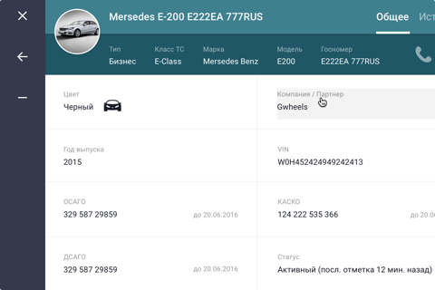

Забота в движении
Добро пожаловать на новый уровень шофёр сервис
для самых взыскательных пассажиров
Добро пожаловать на новый уровень шофёр сервис
для самых взыскательных пассажиров

Ваша заявка принята. Наши операторы
свяжуться с вами в течение 5 минут, чтобы
подтвердить вашу поездку и уточнить детали.
Пройдя весь цикл технического обеспечения своей деятельности от ручного контроля в самом начале до аренды сторонних ИТ решений на поздних этапах, BLAQ создал с нуля собственный программный продукт BLAQ Core, решающий задачи (1) диспетчеризации потока клиентских заказов и (2) администрирования бизнес-процессов, обеспечивающих исполнение этих заказов.
Цель разработки BLAQ Core: обеспечение стабильного уровня непревзойденного качества услуг посредством (1) минимизации человеческого фактора путём максимальной автоматизации бизнес-процессов, и (2) минимизации времени отклика с момента поступления клиентского запроса до момента предоставления практического решения на такой запрос.
В основе разработок был использован самый современный технологический стек с направленностью на обеспечение 4х ключевых параметров: производительность, стабильность, безопасность и масштабируемость. BLAQ Core предоставляет пользователю интерфейсное веб решение с распределением уровней доступа/просмотра и работы в 5-блочной системе: Заказы, Клиенты, Флот, Водители, Администрирование, - и встроенной IP-телефонии.
Наличие собственной команды разработчиков позволяет BLAQ проактивно реагировать на изменения в бизнесе и сохранять приверженность поставленным целям и принципам.
BLAQ Chauffeurs представляет внешнюю часть программного продукта BLAQ, отвечающую за приём, обработку и расчёт стоимости оказанной услуги на стороне водителя.
BLAQ Chauffeurs представлено мобильным приложением с адаптивностью под смартфоны и планшеты с регистрируемым доступом к заказам и администрированию личных данных водителя.
Цель разработки BLAQ Chauffeurs: реализация ценностей, важных для наших водителей и обеспечивающих (1) максимальную оптимизацию и загрузку рабочей смены со снижением простоев и холостого хода; и (2) сохранность и онлайн доступ к важной информации, касающейся истории поездок, времени работы и пробега, сумм заработанной выручки и бонусов, эксплуатационных затрат и штрафов.
Доступный функционал BLAQ Chauffeurs позволяет водителю быть постоянно в курсе изменений, касающихся поездки без необходимости дополнительных звонков диспетчеру, а также быть в курсе личных предпочтений и ожиданий пассажиров, что напрямую сказывается на уровне клиентского удовлетворения и вознаграждения конкретного водителя пассажиром. Согласно статистике, более 20% дохода наших водителей, помимо основного дохода за осуществления самих поездок, формируется суммами прямого вознаграждения от благодарных клиентов.
Подробнее о том, как стать водителем BLAQ